A Small Update About TinyGo
Gophercon 2021
Ron Evans - @deadprogram
Ron Evans (@deadprogram)
Technologist For Hire
hybridgroup.com
Gopherbot
https://github.com/hybridgroup/gopherbot
Gobadge
https://github.com/tinygo-org/gobadge
tinygo.org
Go compiler for small places
Microcontrollers
WebAssembly
Current stats
9k+ stars
495 forks
2400+ commits
100+ contributors
74 different boards supported
74 different sensors/displays supported
2.75 commits/day since last release
TinyGo Release 0.21 Highlights
Runtime and stdlib support improvements
WebAssembly
wasi
Windows
TinyGo in the world
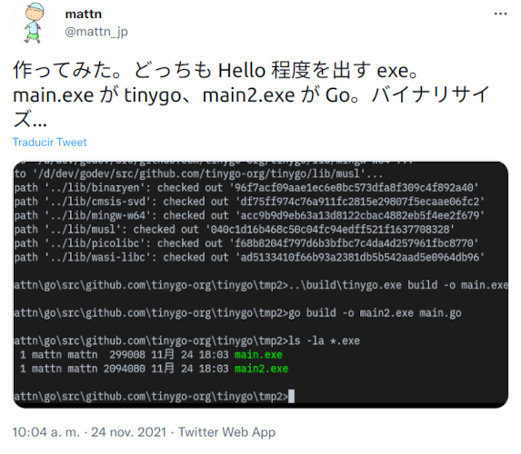
https://twitter.com/mattn_jp/status/1463433450292072448
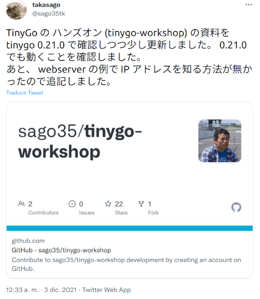
https://twitter.com/sago35tk/status/1466551121410158594
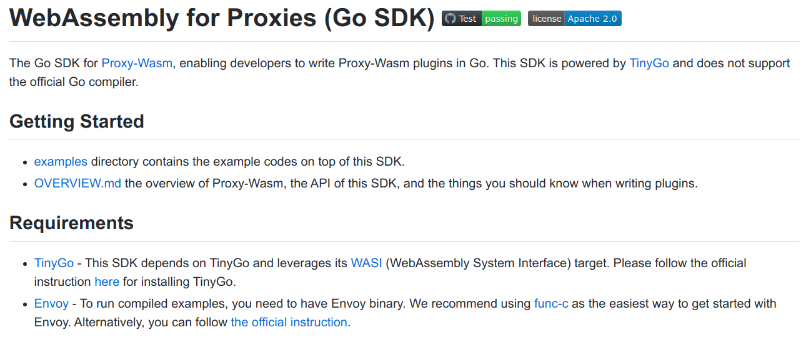
https://github.com/tetratelabs/proxy-wasm-go-sdk
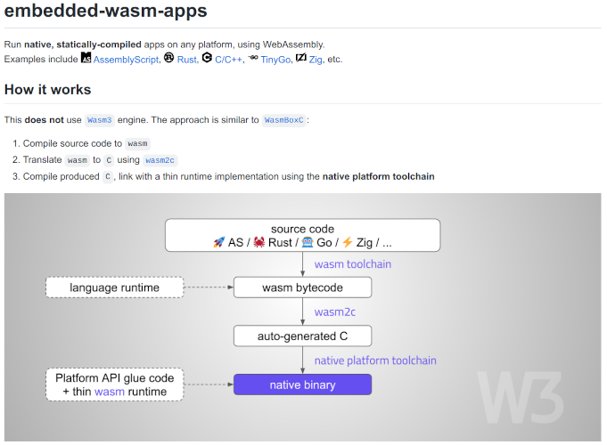
https://github.com/wasm3/embedded-wasm-apps
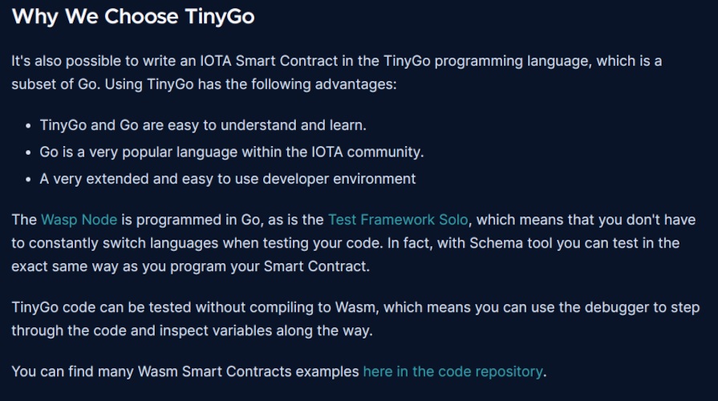
https://wiki.iota.org/learn/future/smart-contracts/smart-contracts-VM-and-languages#why-we-choose-tinygo
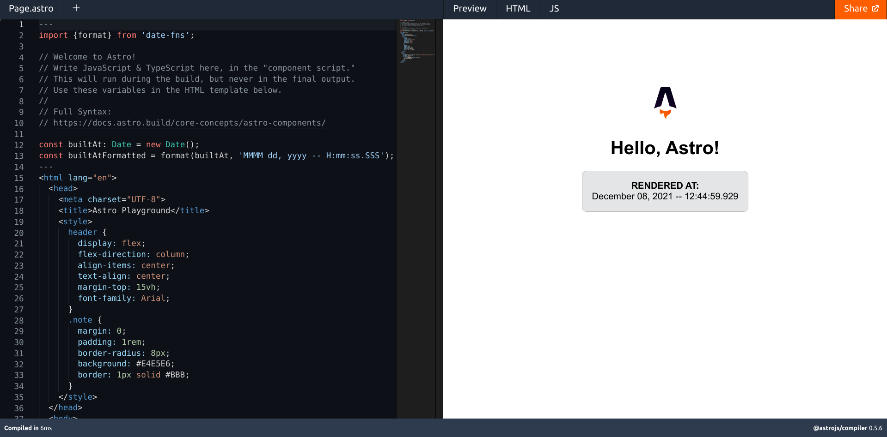
https://astro.build/play
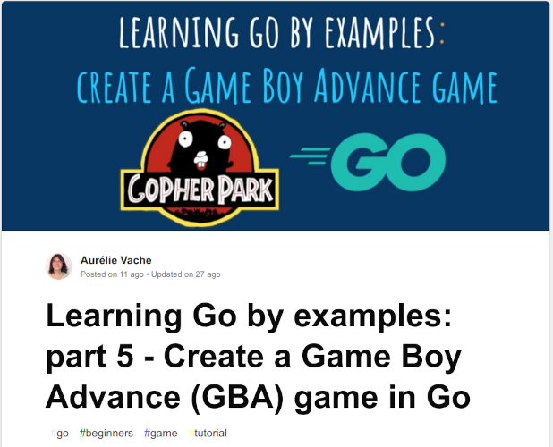
https://dev.to/aurelievache/learning-go-by-examples-part-5-create-a-game-boy-advance-gba-game-in-go-5944
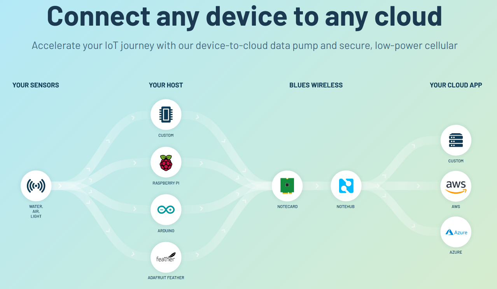
blues.io
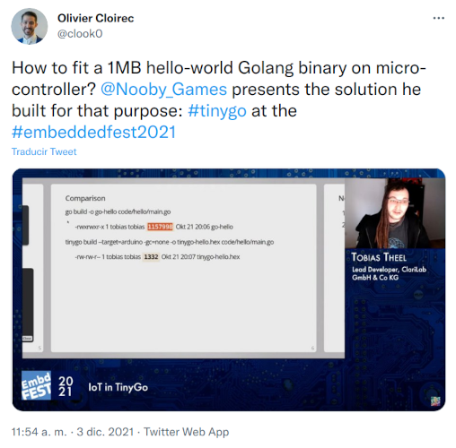
https://twitter.com/clook0/status/1466722611581362180
https://www.packtpub.com/product/creative-diy-microcontroller-projects-with-tinygo-and-webassembly/9781800560208
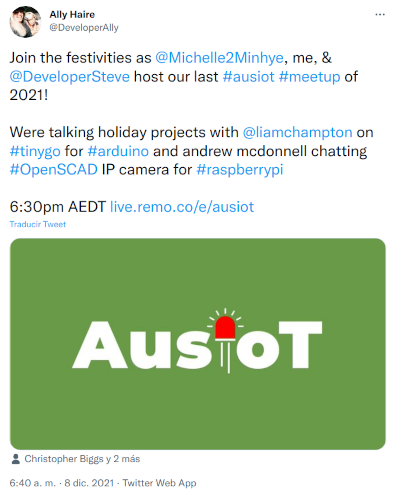
https://twitter.com/DeveloperAlly/status/1468455479860817922
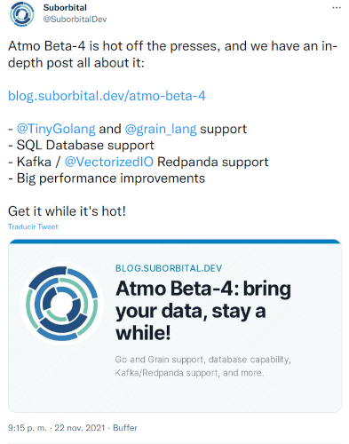